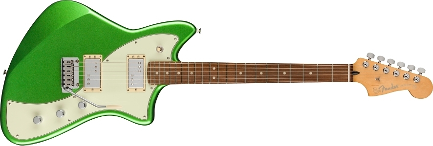
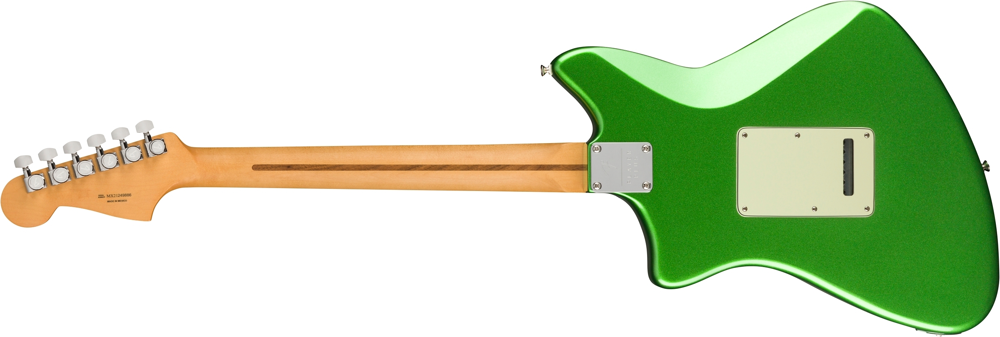
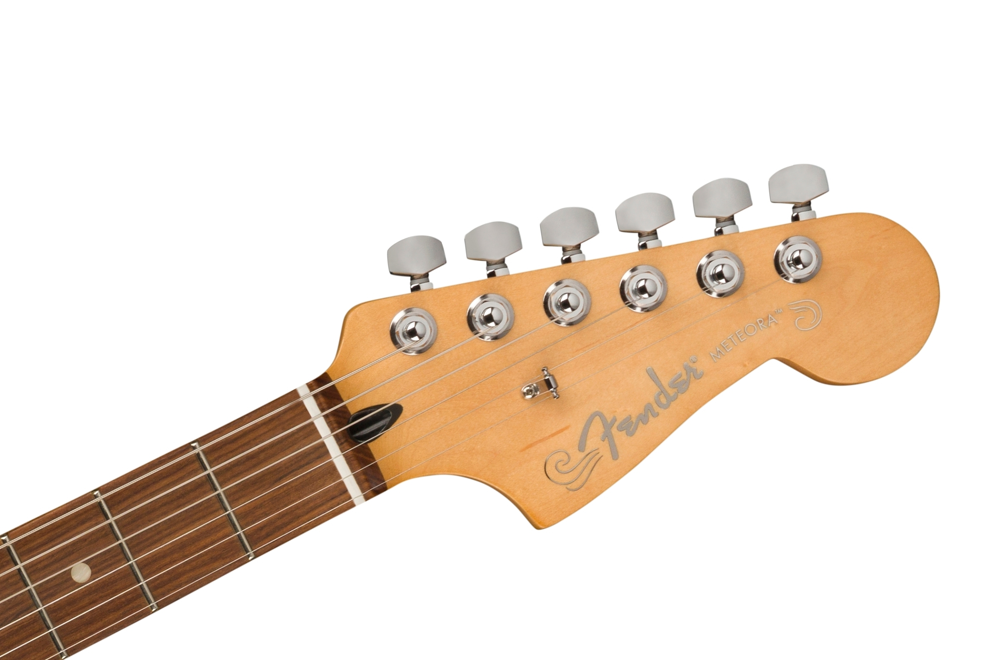

Player Plus Meteora® HH
N.º de modelo: 0970713003
- 
- 
-

- 
COLOR
Cosmic Jade
MATERIAL DEL DIAPASÓN
Aliso
FABRICANTE
$5'000.000
La Player Plus Meteora® fusiona el diseño innovador de Fender, las características de comodidad y los nuevos y sorprendentes acabados para brindar un toque excepcional y un estilo inconfundible.
Las potentes pastillas humbucking Fireball combinan el nivel ideal de ganancia con una nitidez perfecta entre cada una de las cuerdas. Un interruptor S-1™ divide las bobinas para producir tonos de bobina simple de una claridad sin igual. Gracias al suave acabado satinado y los cantos redondeados del mástil de perfil “Modern C”, tu mano se deslizará con una facilidad desconcertante. El diapasón de 12” de radio, con sus 22 trastes jumbo medianos, te ayudará a tocar con una fluidez sin igual y realizar bendings fácilmente. El trémolo de dos puntos te ayudará a producir efectos clásicos con gran capacidad de respuesta, y el clavijero de bloqueo te permitirá mantener la guitarra perfectamente afinada y cambiar las cuerdas en un abrir y cerrar de ojos.
Con el estilo clásico de Fender, características avanzadas y hermosos acabados nuevos, la Player Plus Meteora® es la herramienta perfecta para despertar tu creatividad y expresar tu personalidad.
-
Forma del cuerpo
Meteora®
-
Material del cuerpo
Aliso
-
Material del brazo
Arce
-
Número de trastes
22
-
Pastillas
Fireball™ Humbucking